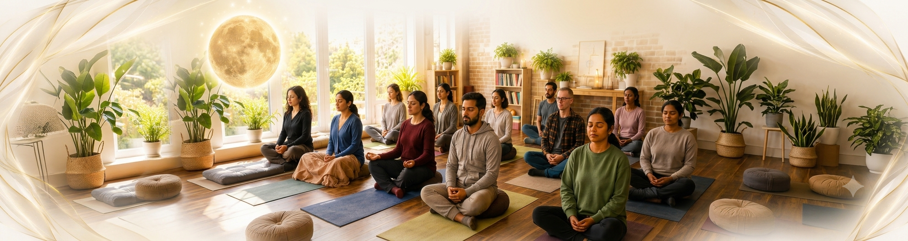

Full Moon Meditation on Twin Hearts
A special community group meditation for inner stillness, emotional renewal, and collective harmony. This guided practice brings together the power of meditation, the full-moon period, and collective group practice — a space to pause, cleanse and energize, cultivate loving-kindness, and reconnect with a deeper sense of inner balance.

The Full Moon, the practice, and the power of group meditation
🌕 The Full MoonTraditionally regarded as a period of heightened energy and spiritual significance, offering a meaningful opportunity to step away from everyday activity and dedicate time to meditation, reflection and renewal.
🤍 Meditation on Twin HeartsA powerful spiritual practice developed by Grandmaster Choa Kok Sui, combining activation of the heart and crown energy centres with blessing the Earth with loving-kindness, peace and goodwill.
🕊️ The Power of Group MeditationMeditating together creates a shared space of stillness and intention, making it easier to remain focused and deepen the experience of connection and community.
What this practice offers
Greater inner calmHelps settle mental activity and create a deeper sense of stillness and relaxation.
Emotional renewalCreates space to release accumulated emotional heaviness and reconnect with greater balance and lightness.
Mental clarityA regular meditation practice can help create greater awareness and a calmer, more centred state of mind.
Cultivating loving-kindnessThe practice consciously develops qualities such as compassion, kindness, forgiveness and goodwill.
Energy and vitalityTraditionally practised to cleanse, energize and harmonize the subtle energy system.
A sense of connectionThe blessing component expands the practice beyond oneself, encouraging a feeling of interconnectedness and collective wellbeing.
A dedicated moment for reflectionA recurring opportunity to pause, reflect on what needs to be released, and consciously set an intention for the period ahead.
Deeper experience through communityPractising with others can bring a greater sense of commitment, shared intention and belonging than practising alone.
How the session flows
Arrival & settling in
A few quiet moments to arrive, settle into the space and transition away from the pace of daily life.
Introduction to the practice
A brief explanation of Meditation on Twin Hearts, the significance of the gathering, and how to approach the meditation.
Preparation & relaxation
Simple guided preparation to relax the body, calm the mind and become more aware of the energy within.
Meditation on Twin Hearts
A guided meditation involving activation of the heart and crown centres, followed by blessing the Earth with loving-kindness, peace and goodwill.
Silence & integration
A period of quiet stillness after the meditation, allowing participants to gently absorb and integrate the experience.
Closing & grounding
The session concludes with grounding and a gradual return to normal awareness.
Community connection
An optional opportunity to connect with fellow participants and share the experience of practising together.
Common questions
Yes. The meditation is guided step-by-step, so you do not need previous experience with Meditation on Twin Hearts.
No. The session is open to anyone interested in experiencing the meditation. No prior knowledge of Pranic Healing is required.
Not at all. You can attend whether you are completely new to meditation or already have an established practice.
The full moon is traditionally considered a spiritually significant period and is often used as an opportunity for meditation, reflection and inner work. The gathering gives participants a dedicated time to practise together during this period.
The practice is traditionally done individually as well as in groups. A group gathering creates a shared environment of meditation and collective intention, while also making the practice more accessible and engaging.
Wear comfortable clothing that allows you to sit comfortably for the duration of the meditation.
Generally, just come comfortably prepared for meditation. If the session has any specific requirements, they'll be shared with participants beforehand.
Yes. The session is guided and can be approached simply as a meditation experience. You do not need to understand energy concepts beforehand.
The exact duration varies by event format, but a typical community session includes arrival, introduction, guided meditation, silence/integration and closing.
Yes. It can be practised individually, while community sessions offer the additional experience of meditating with others in a shared space of intention and stillness.
Come as you are — Pause from the noise of everyday life. Sit in stillness. Meditate in community. Use the Full Moon as a moment to renew within, and extend peace and goodwill beyond yourself.
Ready to experience it for yourself?
Reach out and we'll help you find the right first session, whether that's this one or another on the calendar.
Get in touch